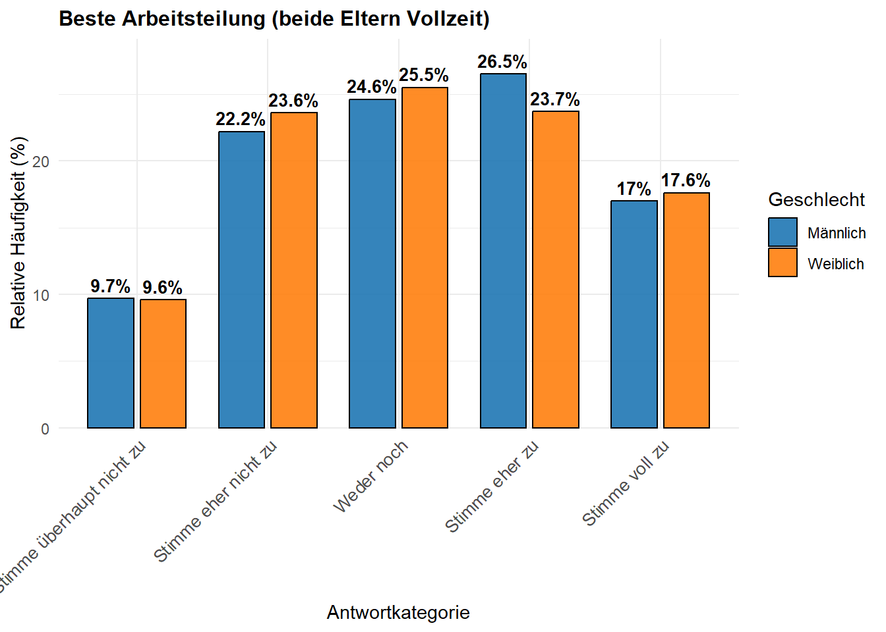
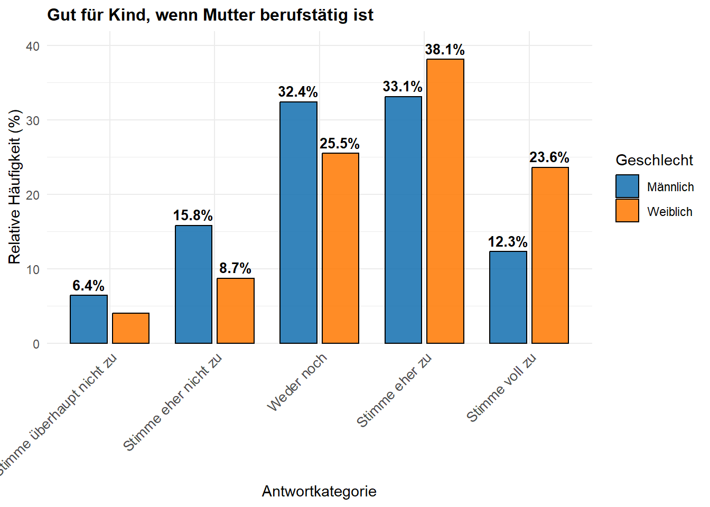
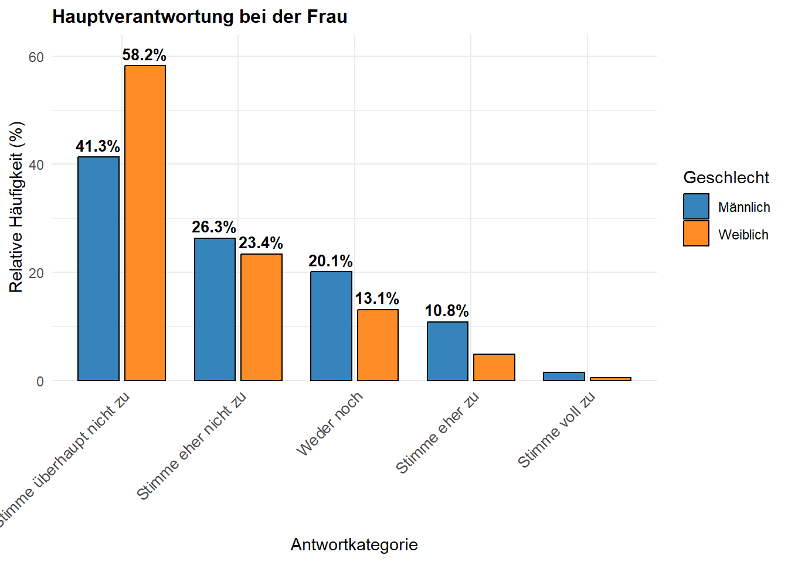
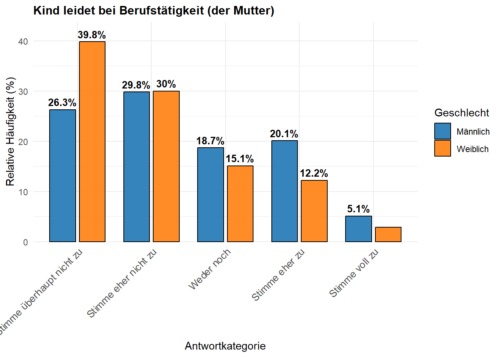
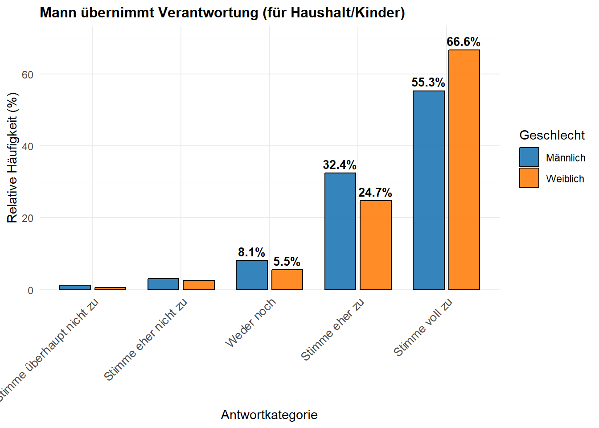
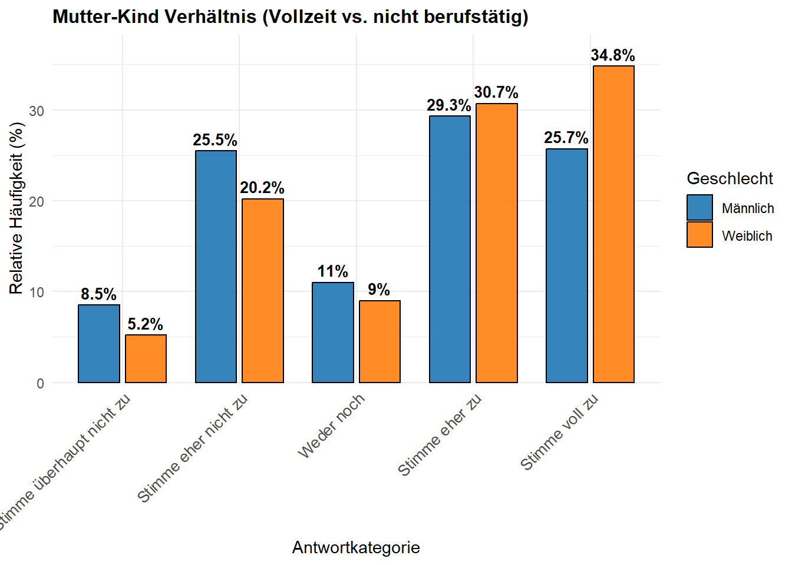
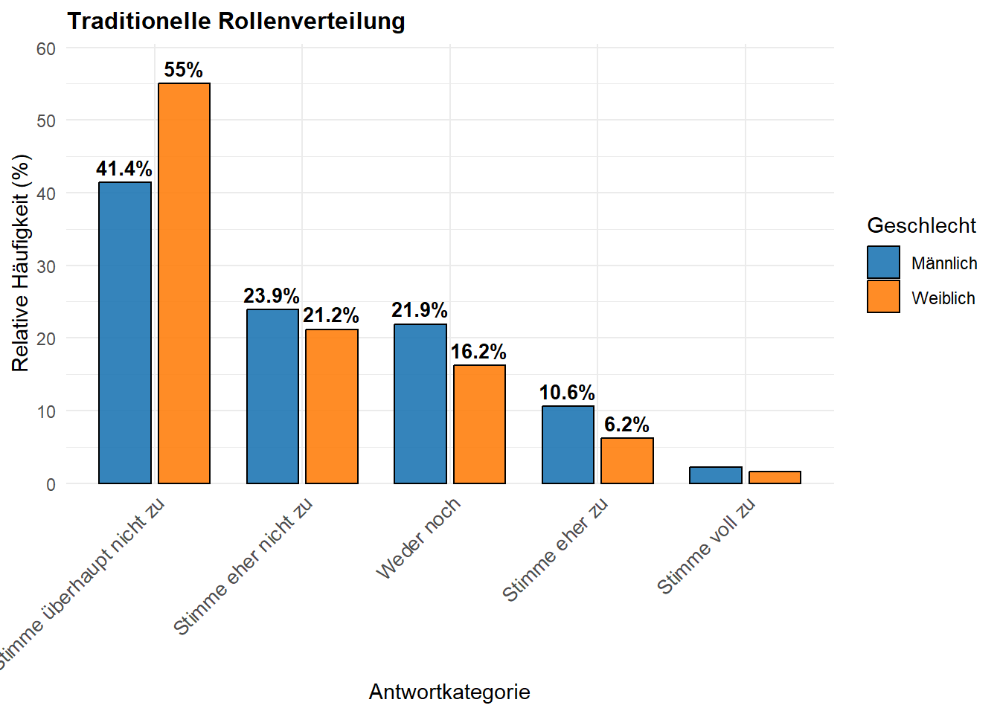
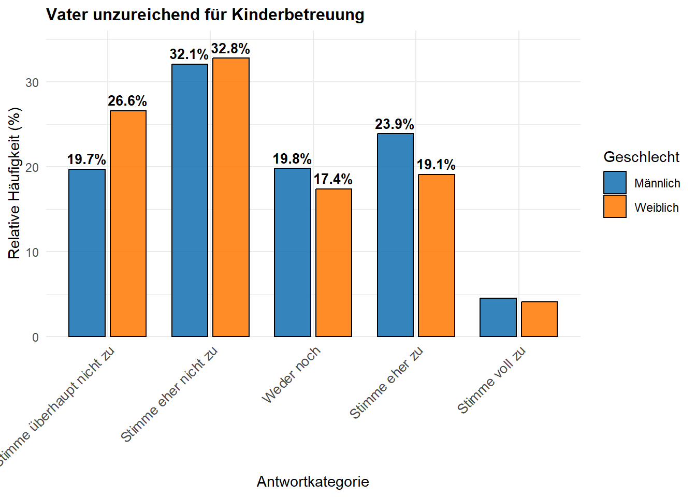
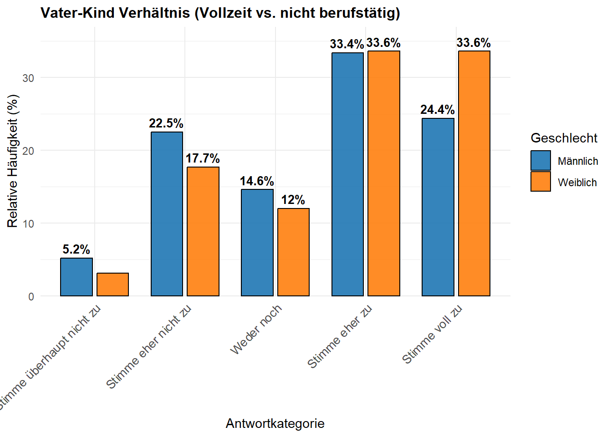
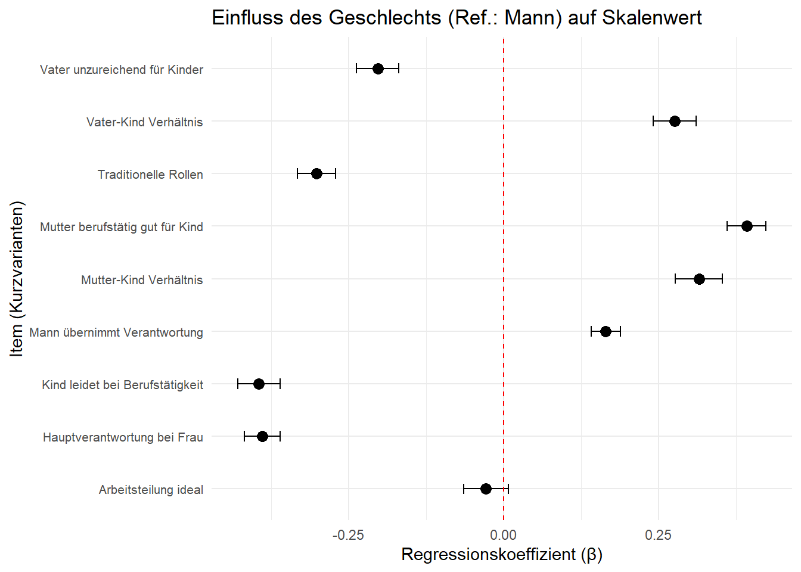

| Aussage | Stimme überhaupt nicht zu | Stimme eher nicht zu | Weder noch | Stimme eher zu | Stimme voll zu |
|---|---|---|---|---|---|
| Eine Vollzeit erwerbstätige Mutter kann zu ihrem Kleinkind normalerweise ein genauso inniges Verhältnis haben wie eine Mutter, die nicht berufstätig ist. | |||||
| Die beste Arbeitsteilung in einer Familie ist, dass beide Eltern Vollzeit arbeiten und sich gleichermaßen um den Haushalt und die Kinder kümmern. | |||||
| Ein Kleinkind wird sicherlich darunter leiden, wenn seine Mutter berufstätig ist. | |||||
| Es ist für alle Beteiligten viel besser, wenn der Mann voll im Berufsleben steht und die Frau zu Hause bleibt und sich um den Haushalt und die Kinder kümmert. | |||||
| Es ist für ein Kind sogar gut, wenn seine Mutter berufstätig ist und sich nicht nur auf den Haushalt konzentriert. | |||||
| Ein Vollzeit erwerbstätiger Vater kann sich nicht ausreichend um seine Kinder kümmern. | |||||
| Auch wenn beide Eltern erwerbstätig sind, ist es besser, wenn die Verantwortung für den Haushalt und die Kinder hauptsächlich bei der Frau liegt. | |||||
| Ein Vollzeit erwerbstätiger Vater kann zu seinem Kleinkind normalerweise ein genauso inniges Verhältnis haben wie ein Vater, der nicht berufstätig ist. | |||||
| In einer Familie kann auch der Mann für den Haushalt und die Kinder verantwortlich sein, während die Frau Vollzeit erwerbstätig ist. |
Übung: Komplexe Daten generierende Prozesse
1 Vorrede
[Dramatische Stimme: an] Diese Übung konfrontiert Sie mit der Komplexität empirischer Sozialforschung. Das ist gut so, denn ab und zu müssen wir uns die Hände schmutzig machen. Ihre wesentliche Aufgabe für diese Übung ist es, sich von dieser Komplexität nicht beeindrucken zu lassen, sondern ruhig und methodisch durch den Dschungel zu gehen. [Dramatische Stimme: aus]
2 Die Quelle
Unsere Daten stammen aus einer weiteren Erhebung von FREDA. Diesen Teil des Fragebogens erhalten nur Personen, die vorher angegeben haben, Eltern zu sein. Füllen Sie diesen Teil einmal aus, um ein Gefühl zu erhalten, über was die weiteren Analysen eine Aussage machen sollen.
Der letzte Teil dieser Befragung beschäftigt sich mit Ihren Einstellungen und Werten. Dies ist sehr wichtig, damit wir Ihre Ansichten über Familie und Beziehungen besser verstehen können.
129 Über die Aufgaben von Müttern und Vätern gibt es verschiedene Meinungen. Inwieweit stimmen Sie jeder der folgenden Aussagen zu beziehungsweise nicht zu?
3 Verteilung der Reaktionen
Wir studieren zunächst die allgemeine Reaktion auf die Items.
- Gibt es eine allgemeine Tendenz zu einem “konservativen” oder “progressiven” Muster?
- Gibt es Items, die wenig Varianz produzieren?
- Gibt es Items, die ganz besonders viel Varianz produzieren?
| Fragebogenitem | Stimme überhaupt nicht zu | Stimme eher nicht zu | Weder noch | Stimme eher zu | Stimme voll zu |
|---|---|---|---|---|---|
| Mutter-Kind-Verhältnis (Vollzeit vs. nicht berufstätig) | 6.6 | 22.6 | 9.9 | 30.1 | 30.8 |
| Beste Arbeitsteilung (beide Eltern Vollzeit) | 9.7 | 23.0 | 25.1 | 25.0 | 17.3 |
| Unzureichende Kinderbetreuung durch vollzeitberufstätigen Vater | 23.6 | 32.5 | 18.5 | 21.2 | 4.3 |
| Vater-Kind-Verhältnis (Vollzeit vs. nicht berufstätig) | 4.0 | 19.8 | 13.1 | 33.5 | 29.6 |
| Leid des Kleinkinds bei Berufstätigkeit der Mutter | 33.9 | 29.9 | 16.7 | 15.6 | 3.9 |
| Traditionelle Rollenverteilung (Mann Vollzeit, Frau zu Hause) | 49.0 | 22.4 | 18.7 | 8.1 | 1.9 |
| Gut für Kind, wenn Mutter berufstätig ist | 5.1 | 11.8 | 28.5 | 35.9 | 18.7 |
| Hauptverantwortung Haushalt/Kinder bei Frau (trotz beider Eltern berufstätig) | 50.8 | 24.7 | 16.2 | 7.4 | 1.0 |
| Mann kann Verantwortung für Haushalt/Kinder übernehmen (Frau Vollzeit) | 0.8 | 2.8 | 6.6 | 28.1 | 61.7 |
4 Geschlechtsspezifische Differenzen der Reaktionen
Wir analysieren nun, ob es geschlechtsspezifische Differenzen in den Reaktionen gibt.
- Im ersten Graph sehen Sie geschlechtsspezifische Differenzen relativer Häufigkeiten auf die Itemreaktionen.
- Der zweite Graph trägt \(\hat{\beta}\)-Koeffizienten bivariater Regressionen mit den Items als Outcome und dem Geschlecht als erklärende Variable ab.
Welche Muster können Sie erkennen?










5 Alles hängt mit allem zusammen
Im Folgenden sehen sie Korrelationen aller Items untereinander. Gibt es “Cluster” – d.h. Items, die besonders stark miteinander korrelieren – und was würden diese bedeuten?
| Item | val13i1 | val13i2 | val13i6 | val13i8 | val13i3 | val13i4 | val13i5 | val13i7 | val13i9 |
|---|---|---|---|---|---|---|---|---|---|
| Mutter-Kind Verhältnis | 1 | ||||||||
| Arbeitsteilung ideal | 0.48 | 1 | |||||||
| Vater unzureichend für Kinder | -0.39 | -0.3 | 1 | ||||||
| Vater-Kind Verhältnis | 0.64 | 0.38 | -0.49 | 1 | |||||
| Kind leidet bei Berufstätigkeit | -0.55 | -0.35 | 0.38 | -0.43 | 1 | ||||
| Traditionelle Rollen | -0.41 | -0.3 | 0.25 | -0.27 | 0.56 | 1 | |||
| Mutter berufstätig gut für Kind | 0.37 | 0.32 | -0.18 | 0.3 | -0.44 | -0.4 | 1 | ||
| Hauptverantwortung bei Frau | -0.28 | -0.2 | 0.21 | -0.2 | 0.39 | 0.56 | -0.23 | 1 | |
| Mann übernimmt Verantwortung | 0.27 | 0.15 | -0.15 | 0.23 | -0.31 | -0.41 | 0.22 | -0.46 | 1 |
6 Latente Faktoren
Im Folgenden sehen Sie Faktorenanalyse mit einem, zwei und drei Faktoren.
- Welches Modell präferieren Sie und warum?
- Wie können wir die latenten Faktoren/Dimensionen bezeichnen?
- Wie könnten wir die Validität dieser Modellierung überprüfen?
Eine Dimension elterlicher Werte?
Zwei Dimensionen elterlicher Werte?
Drei Dimensionen elterlicher Werte?
| Df | AIC | BIC | Chisq | Chisq diff | RMSEA | Df diff | Pr(>Chisq) | |
|---|---|---|---|---|---|---|---|---|
| fit3 | 24 | 330309.8 | 330467.3 | 2744.77 | NA | NA | NA | NA |
| fit2 | 26 | 332067.1 | 332209.6 | 4506.05 | 1761.28 | 0.26 | 2 | 0 |
| fit | 27 | 335506.0 | 335641.0 | 7946.96 | 3440.91 | 0.51 | 1 | 0 |